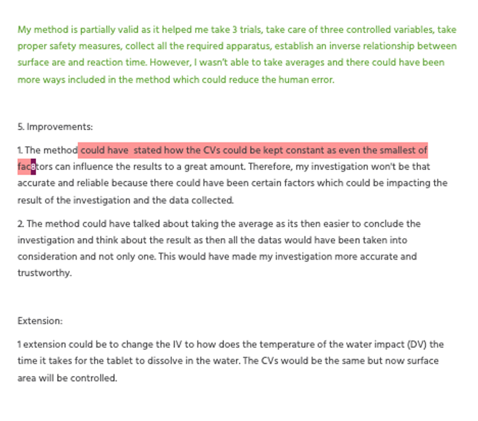
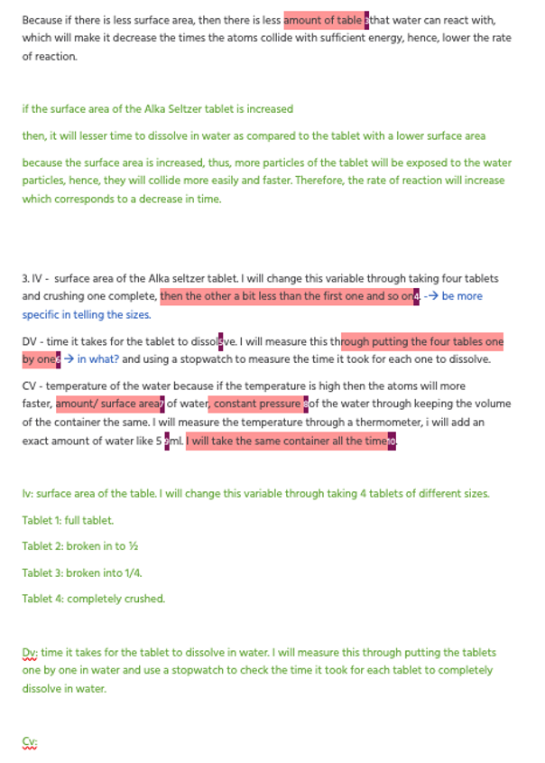
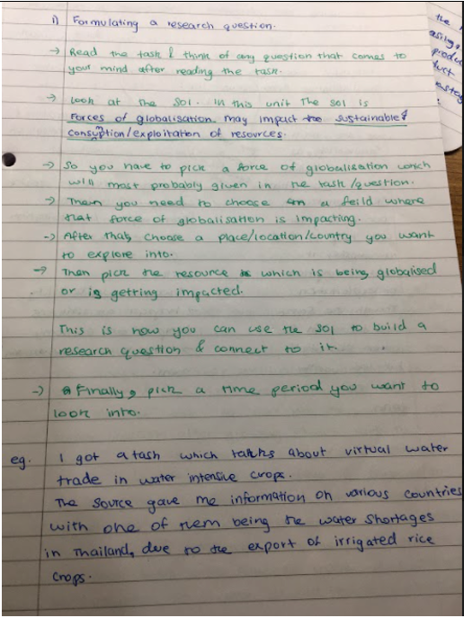
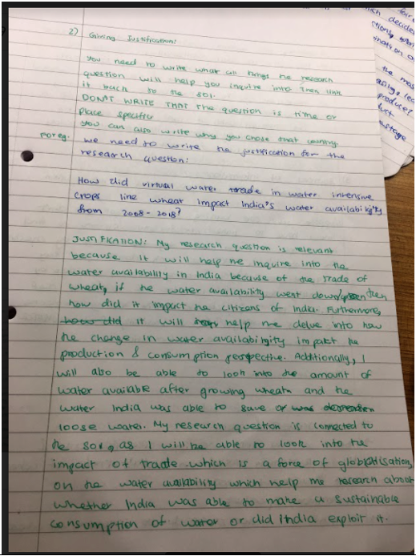

During the previous semester, I gained a lot of knowledge through understanding new topics and concepts. I also got a better understanding of the criterias and their expectations for all the subjects. But, in order to continue to improve, I have set some subject specific goals for myself to achieve and show progress in the academics.
SUBJECT |
GOAL |
STRATEGIES TO ATTAIN THE GOAL |
TIME PERIOD |
SUPPORT REQUIRED |
EVIDENCE |
|
Chemistry |
Improve in criteria B and C. |
I will redo all the assessments I attempted of criteria B and C. |
2 weeks |
My chemistry teacher so she could continue to give |
  |
Math |
Improve in criteria A |
I will be more consistent and practice the topics taught daily for at least 45 minutes so that I do less silly mistakes and feel more confident when giving the assessment. |
A month so that I get habitual of practicing math each day |
My math teacher so she could continue providing us with task sheets and resources. |
|
Individuals and Societies |
Improve in criteria B |
I will reattempt the assessments I have done so far on criteria B and make note of the repitive mistakes I made. |
2 weeks |
My Ins teacher so she could continue to give us practice on the command terms in criteria B. |
  |